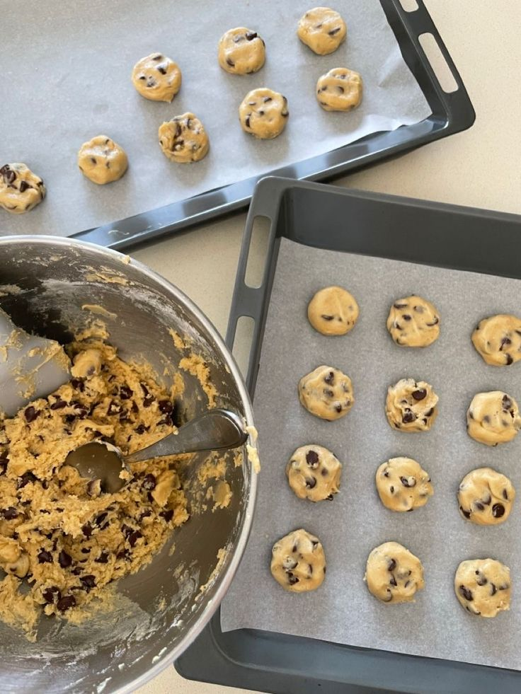

🍪 Recette des Cookies au Chocolat 🍫

Ingrédients (pour 12 cookies)
- 100 g de beurre mou
- 100 g de sucre roux
- 1 œuf
- 150 g de farine
- 1/2 cuillère à café de levure chimique
- 100 g de pépites de chocolat
Étapes de préparation
- Préchauffez votre four à 180°C.
- Dans un grand saladier, mélangez le beurre mou et le sucre roux jusqu'à obtenir une texture crémeuse.
- Ajoutez l'œuf, puis la farine et la levure. Mélangez bien.
- Incorporez délicatement les pépites de chocolat.
- Formez des boules de pâte et disposez-les sur une plaque recouverte de papier cuisson.
- Enfournez pour 10 à 12 minutes. Laissez refroidir avant de déguster !

Bon appétit !
NAJIB MYRIAM G8